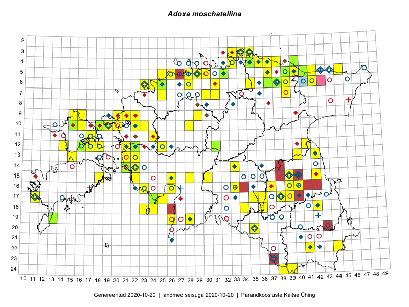

Adoxa moschatellina
Uuendatud: 2016-12-01
Kaardile koondatud taksonid: Adoxa moschatellina L.

Kaart põhineb 152 kirjel, neist vaatlusi 150 ja eksemplare 2.
Kuvatud viited 20 esimesele andmebaasikirjele, ülejäänud PlutoFis
- Thea Kull: 2015-04-25: 05-41: ala
- Thea Kull: 2015-04-25: 05-41: ala
- Meeli Mesipuu, Kadri Tali: 2015-04-30: 17-39: ala
- Meeli Mesipuu, Kadri Tali: 2015-04-30: 17-39: GPS punkt
- Peedu Saar, Meeli Mesipuu: 2015-05-05: 16-37: GPS punkt
- Peedu Saar, Meeli Mesipuu: 2015-05-05: 16-37: GPS punkt
- Peedu Saar, Timo Luhamäe: 2015-05-10: 12-31: ala
- Peedu Saar, Timo Luhamäe: 2015-05-13: 06-39: ala
- Peedu Saar, Timo Luhamäe: 2015-05-13: 06-39: GPS punkt
- Peedu Saar, Timo Luhamäe: 2015-05-13: 06-39: GPS punkt
- Peedu Saar, Liina Oja: 2015-05-15: 16-23: ala
- Peedu Saar, Liina Oja: 2015-05-21: 16-23: GPS punkt
- Peedu Saar, Liina Oja: 2015-05-21: 16-23: GPS punkt
- Peedu Saar, Toomas Kukk: 2015-05-28: 11-17: ala
- Peedu Saar, Toomas Kukk: 2015-05-28: 10-15: ala
- Peedu Saar, Toomas Kukk: 2015-05-27: 09-16: ala
- Peedu Saar: 2015-05-01: 15-42: ala
- Peedu Saar: 2015-05-01: 15-42: GPS punkt
- Toomas Kukk, Raivo Kalle: 2015-05-13: 06-38: ala
- Toomas Kukk, Raivo Kalle: 2015-05-13: 06-38: GPS punkt